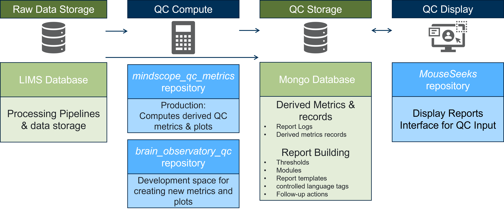

The Allen Institute is dedicated to accelerating the understanding of how the human brain works in health and disease. Using a big science approach, the Allen Institute generates useful public resources used by researchers and organizations around the globe, drives technological and analytical advances, and discover fundamental brain properties through integration of experiments, modeling and theory.
GitHub Profile | Allen Institute for Brain Science | Allen Brain Atlas | Allen SDK
Brain Observatory Quality Control Ecosystem
The Allen Brain Observatory presents the first standardized in vivo surveys of physiological activity in the mouse visual cortex. A robust quality control system is integral to the success of these projects. Additionally we believe that transparency into this process not only builds trust within the broader scientific community but facilitates growth of the entire field by promoting discussion and providing open source tools for all to utilize.
The quality control system is currently supported by several code repos and databases. The components of the overall code ecosystem are as follows:
- Raw & processed data storage
- QC metric computation
- QC metric storage
- QC report building and infrastructure
- QC report display human feedback

Raw & Processed Data Storage
Both raw and processed data are currently stored in an internal SQL database and network storage system known as LIMS (Lab Information Management System). Some metrics created by the processing pipeline are directly uploaded to qc storage, while many others are derived using the raw and processed files.
QC Metric Computation
Brain Observatory QC (BOQC) repository is a space for internal Allen Institute researchers to develop new or one-off quality control metrics and plots. In this space scientists create functions that can be run independently for their specific needs. It is also a central location for for tracking data quality issues. This is a private repo and is only accessible to internal Allen Institute researchers.
Mindscope QC metrics is considered the production space for computing quality control metrics that can then be displayed in qc reports. All metrics and plots generated from this repo are uploaded to the qc metrics database. Functions from BOQC repo can be moved into this repo once they are stable and abide by the code and style guides. This is a private repo and is only accessible to internal Allen Institute researchers.
QC Metric Storage
https://github.com/AllenInstitute/quality_control_ecosystem/wiki/QC-Metric-Storagedescription of the mongodb logs here
QC Report Building
https://github.com/AllenInstitute/quality_control_ecosystem/wiki/QC-Report-Buildingdescription of mongodb reports here
QC Report Display
The MouseSeeks repo is responsible for displaying the quality control reports in a webapp that researchers use to monitor data quality as well as make and record specific quality control decisions. This is a private repo and is only accessible to internal Allen Institute researchers.